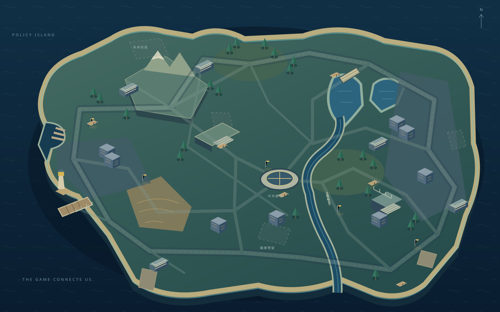

WELCOME TO YOUR BASKETBALL ISLAND
登島。讓每一球有故事。
去主場看一場好球，或約朋友在街角來場 PK。
沿著球場探索，為每一次選擇找到自己的答案。
08 NBA 主場15 公共球場一座島，兩種熱愛。

我
已開放 8／30 支 NBA 球隊已完成 0／1 個政策挑戰
從灣岸、高地到都會，留下一條通往全聯盟的路。長期目標為 30 隊，包含多倫多暴龍；目前只開放圖上的 8 座主場。
模擬賽事勇士客場打湖人・此戰僅湖人亮燈
四場示範對戰・非 NBA 即時賽況
四場示範對戰・非 NBA 即時賽況
挑一座球場，出發。
地圖小了？從清單直達。單機練習・非真人連線
投籃挑戰
- 開始後等倒數結束，每人有 30 秒。
- 白色游標進入金色區，按空白鍵或點「出手」。
- 每次命中得 1 分，時間到顯示結算；好友局比較雙方命中數。
音效關閉，仍會顯示命中與終場文字。
按開始後，將游標停在金色區。
準備好再出手。
- 剩餘時間
- 30.0秒
- 命中
- 0
- 出手
- 0